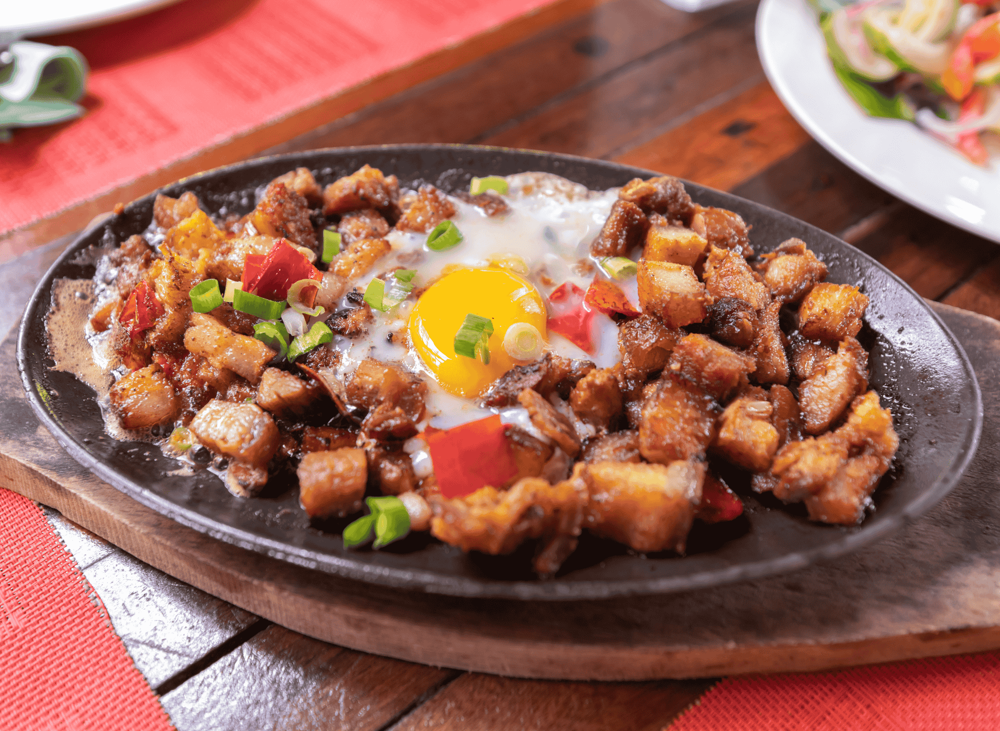

Top 3 Must-Visit Spots This Month
Based on our recent visits, here are the top-rated establishments you should try before the month ends:
- Kambingan: Best for affordable food and outdoor seating.
- Starbucks Naga: A quiet spot with excellent brewed coffee and pastries.
- Kinalas-Conception Grande: Authentic flavors with a very friendly staff.
Review: The Sizzling Sisig Experience
We visited The Local Kambingan on Tuesday, located in Dalan-dalan in Nabua-iriga boundary. Despite the weather, the atmosphere was warm and inviting. We ordered their signature Sizzling sisig, which was cooked to a perfectly texture with a mouth-watering aroma.

Fig 1. The signature Sizzling Sisig served with Kalamansi.
The pricing is very reasonable for the portion size. If you are looking for a place that balances quality and cost, this is the spot for you.
| Criteria | Rating (Out of 5) |
|---|---|
| Taste | 4.5 |
| Service | 4.0 |
| Price | 5.0 |